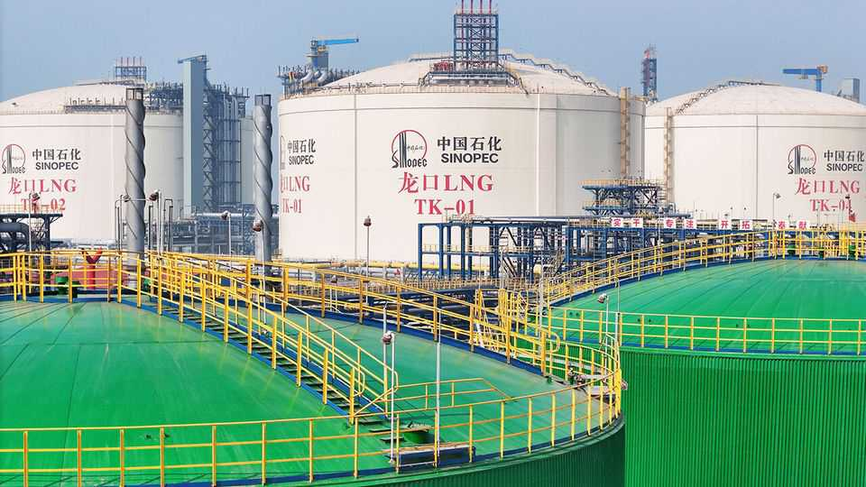

The world’s strategic oil reserves are running out fast
They cannot hold back the energy crunch for ever
June 11th 2026

MORE THAN 100 days into the third Gulf war, oil markets have shielded themselves against bad news on the battlefield. On June 8th, after renewed strikes between Iran and Israel threatened a shaky two-month ceasefire, the price of Brent crude, the international benchmark, rose by just 1%. Even after subsequent exchanges between America and Iran, early on June 11th it was around $93 per barrel, more than $30 below its intraday high in April.
Oil markets are placid because they have found ways around the 15m barrels per day (b/d) of missing supply created by the closure of the Strait of Hormuz. China has slashed its imports by roughly 5m b/d from pre-war levels; rationing has caused overall demand elsewhere to fall by a similar amount. Brazil, Venezuela and others are pumping a bit more than before. The remainder is being filled by tapping the world’s stocks—above all from rich countries’ strategic petroleum reserves (SPRs).

In March the 32 members of the International Energy Agency, a club of large oil-consuming countries, pledged to release 400m barrels from government stockpiles—the biggest co-ordinated drawdown in the IEA’s history. Just under half of those barrels have now been delivered, at the record pace of 2.5m-3m b/d. But releases may slow sharply in the coming weeks. Whether they do will help determine if oil markets keep their cool this summer.
The key characters in this holiday thriller are Japan, America and Europe. At the start of the war Japan received 90% of its crude from the Middle East. It holds some of the world’s biggest reserves and was the most vocal proponent of a co-ordinated IEA release. Data from Kayrros, which tracks storage levels from orbit, shows it quietly began drawing from its SPR even before the IEA’s move in March. It then said it would release 50 days’ worth of consumption from its public stockpile—or 90m barrels—most of which has already been distributed to domestic refiners.
The pace of releases initially surged to over 1m b/d, before slowing to 0.6m b/d last month. Over the past two months local refiners have managed to replace most of what they once imported through Hormuz with oil bypassing the strait via pipeline and purchases from non-Gulf producers, in particular America, says Terazawa Tatsuya of the Institute of Energy Economics, a Japanese think-tank. This has helped Japan’s public stocks retain over 120 days of supply, above the IEA’s 90-day floor.
Although Takaichi Sanae, the prime minister, has not ruled out another release altogether, she said no to one last month and may be reluctant to authorise a big drawdown. It would leave Japan’s stocks too empty for comfort, with no end in sight for the crisis and with competition for alternative sources rising everywhere, observes Christopher Haines of Energy Aspects, a consultancy.
America is even more constrained. Its SPR entered the war nearly half-depleted, after a big drawdown in 2022-23, when the oil price spiked after Russia’s invasion of Ukraine. Even though a portion of the 172m barrels it pledged to the IEA in March has yet to be delivered, its SPR has already hit its lowest since the 1980s, when it was filled up following the Gulf oil shocks of the 1970s. The government is so anxious about its stocks that it is lending barrels rather than selling them, with borrowers obliged to return the volumes withdrawn—plus a premium of 17-26%—by 2027-29. This explains why three of the four tranches auctioned to date have been undersubscribed; some 45m barrels of the authorised release remain unawarded. Another auction is widely expected.
America’s releases have brought relief beyond its shores. Many SPR barrels have made their way from salt caverns in Texas and Louisiana, through commodity traders to buyers in Europe, Asia and Latin America. Yet most analysts expect the pace of deliveries to slow in the coming weeks, from 1.4m to below 1m b/d. Pressure is dropping in the caverns, which risk damage if it gets too low. Bayou Choctaw, the smallest site, is nearly depleted, says Kevin Book of ClearView Energy Partners, a consultancy; others cannot pump more fast enough because of limited pipeline capacity. And the entire SPR has a statutory floor of 150m barrels, just 90m barrels below the level at the end of the current release.
Slower pumping by America and Japan could cut flows from IEA members’ SPRs from 2.5m b/d in June to 0.7m b/d in July, estimates Morgan Stanley, a bank. Can Europe plug the shortfall? When America and Japan called for joint action in early March, European countries pushed back, say people familiar with the talks. Few rely heavily on Gulf supplies and many were wary of drawing down their already thin stocks—which, unlike those of America and Japan, consist mostly of refined products rather than crude oil.
Quantifying how much Europe released in the end is hard. In contrast to America’s reserves and most of Japan’s, Europe’s are not held in dedicated depots but dispersed in commercial tanks leased by governments. Europe has put up most of its oil by lowering the stockholding obligations imposed on industry, says an IEA spokesperson. “Whether these new commercial inventories are physically released is the decision of the entities that own these stocks.”
Experts and market participants reckon few of these barrels have reached the market—allowing European governments, in effect, to free-ride on others’ SPRs. That may not be possible from July, when holiday fuel demand may rise worldwide just as American exports begin to weaken. How quickly European governments can release emergency barrels is another question. “They haven’t done such a thing before at this scale,” says Martha Tallas of Argus Media, a price-reporting agency.
With Asia, America and Europe unwilling or unable to use their reserves, oil markets may soon look less placid. Global commercial stocks, which are projected to hit minimum operational levels by September, will not provide the world’s missing barrels. A growing share of the adjustment will then fall on China. Its ample stocks can last for months. But Chinese leaders may not want to drain these with no peace in sight. And the more reserves are depleted, the more oil will be needed to replenish them once the war ends—keeping prices higher for longer.■
For more expert analysis of the biggest stories in economics, finance and markets, sign up to Money Talks, our weekly subscriber-only newsletter.